Página pública — atual (028) × proposta (029)
Protótipo da Feature 029 para avaliação do solicitante e para o bloco P do Checkpoint 1. Não é implementação. A proposta é o HTML servido pela demonstração com o conteúdo principal trocado; a atual é a página servida hoje. Avalie pelo celular primeiro (ADR 0009, decisão 2).
Critérios medidos (SC-001 a SC-006)
| Atual (028) | ✓ todos os critérios medidos |
|---|---|
| Proposta (029) | ✓ todos os critérios medidos |
Medidas em Chrome headless (gerar.py, com o medidor dos protótipos da ADR
0009). No desktop a faixa de demonstração é descontada; no celular, não.
Contraste dos pares novos
| Branco na faixa profunda | 12.59:1 ✓ |
|---|---|
| Texto secundário na faixa (pp-nota, kicker) | 9.56:1 ✓ |
| Kicker verde no creme | 4.80:1 ✓ |
| Kicker verde no branco | 5.37:1 ✓ |
| Texto no creme | 15.41:1 ✓ |
| Texto suave no creme | 6.03:1 ✓ |
| Selo de exemplo | 15.39:1 ✓ |
| Texto suave no branco | 6.74:1 ✓ |
| Verde profundo no botão claro | 12.59:1 ✓ |
| Ação verde no branco | 9.34:1 ✓ |
Primeira tela no celular (375×812)

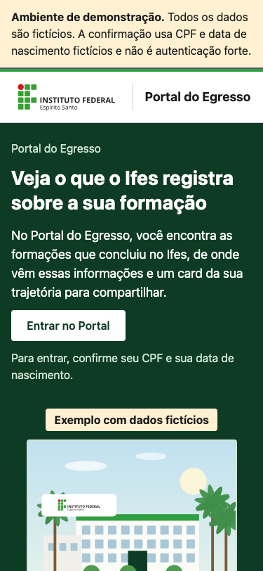

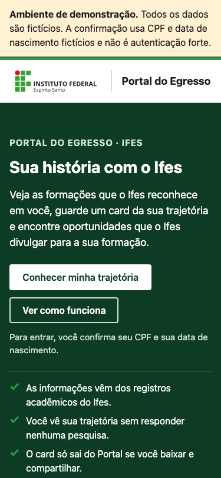
Primeira tela no desktop (1280×720, sem a faixa)

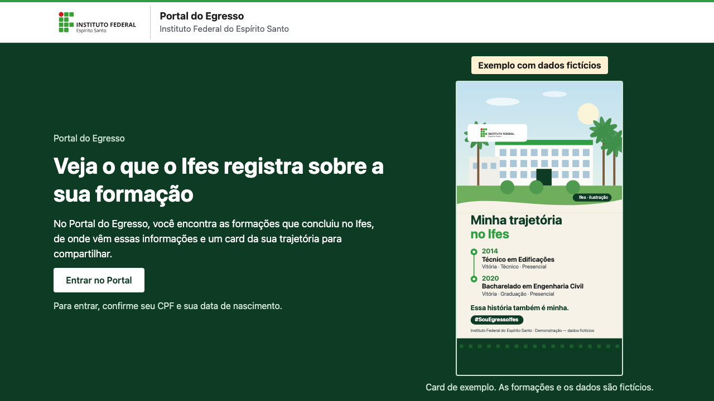

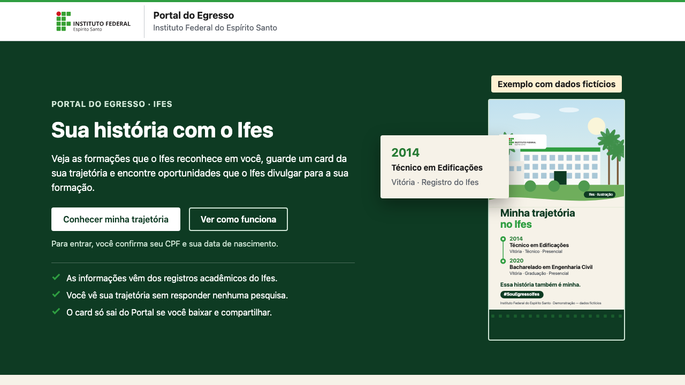
Primeira tela no desktop (1440×900, sem a faixa)

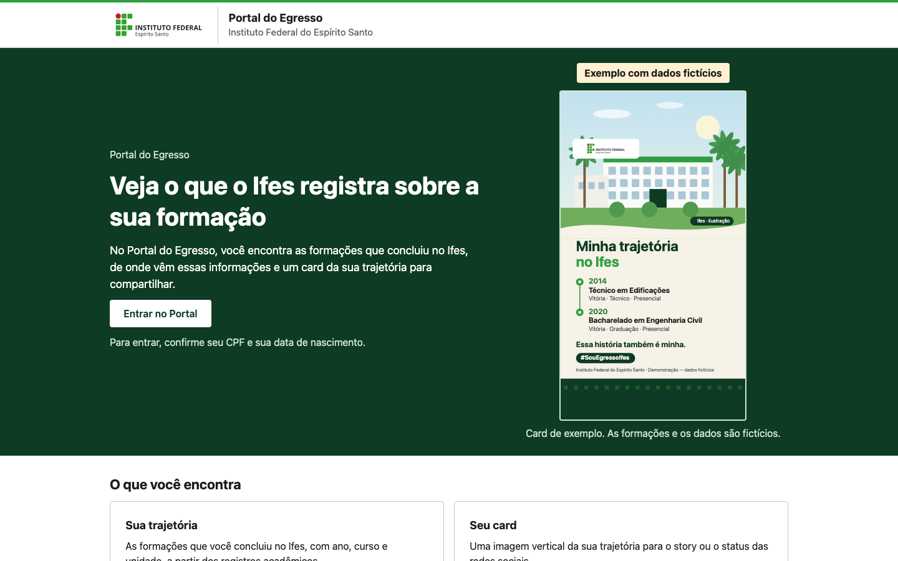

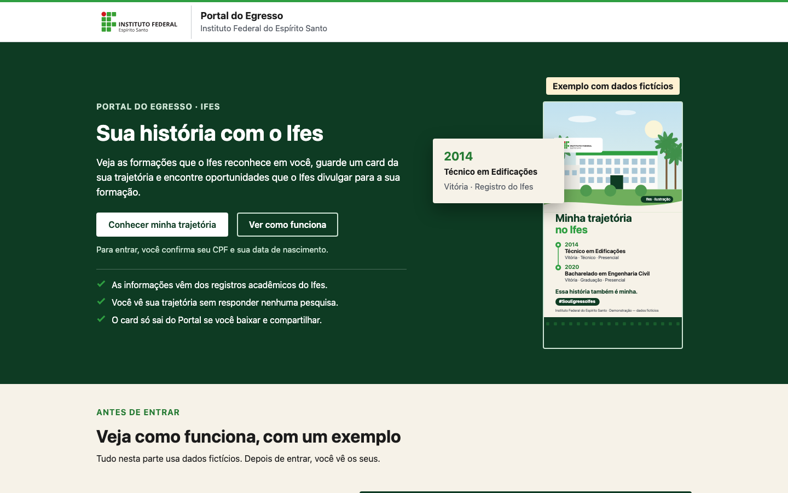
Página inteira, celular (375)

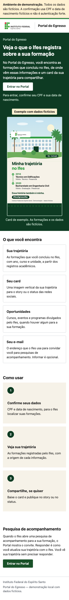

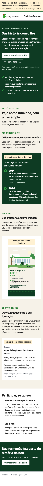
Página inteira, 1024

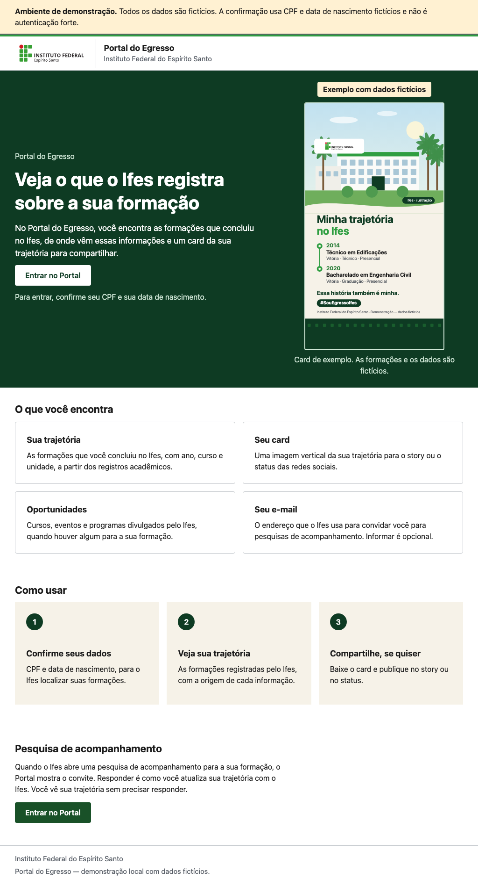

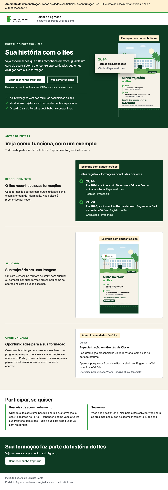
Página inteira, 1440

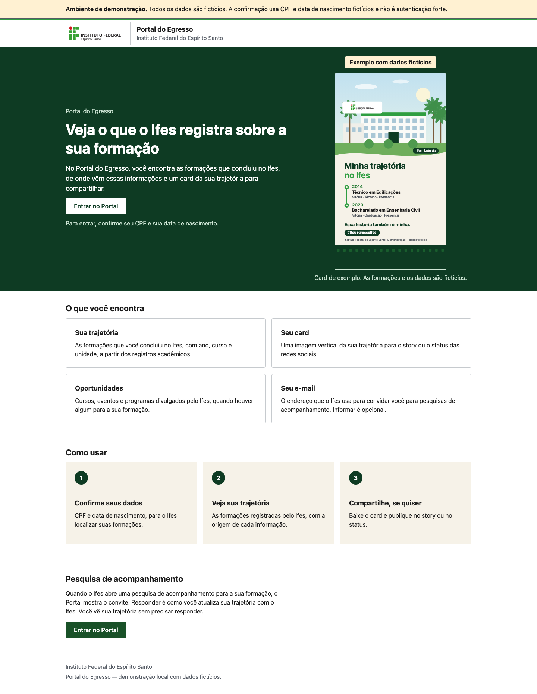

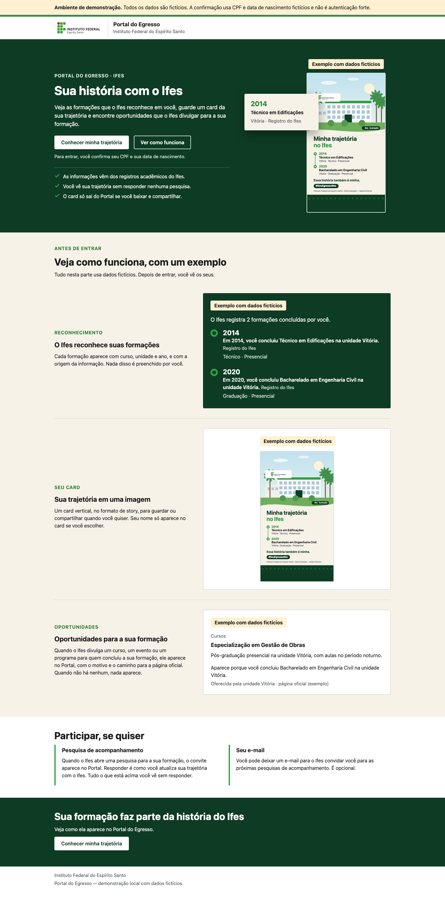